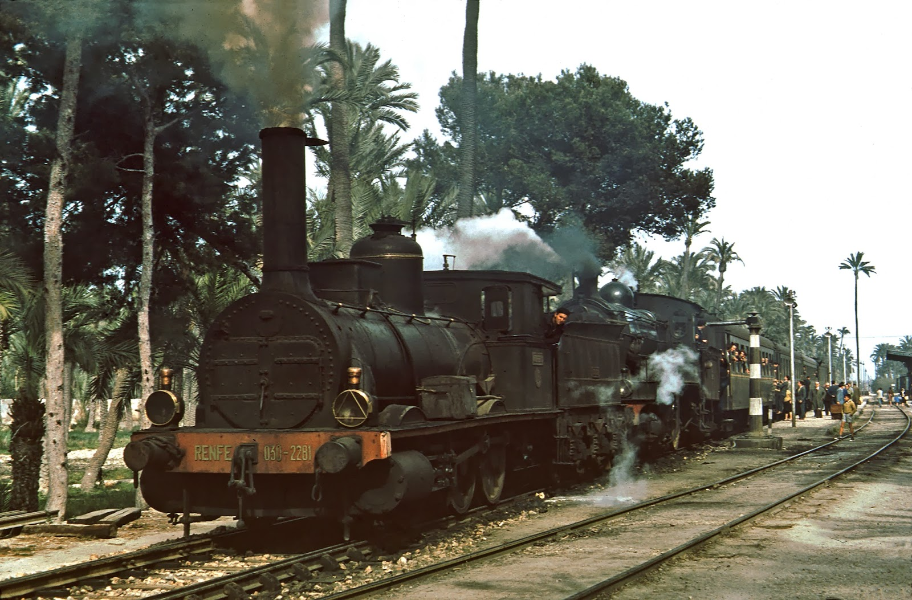
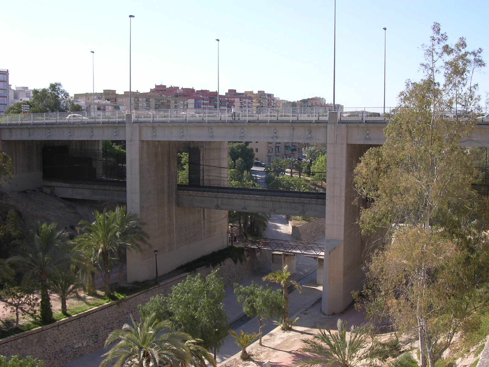

Elche-Parque (in Valencian, Elx-Parc) is a metro station located in the Spanish city of Elche, in the Valencian Community of the province of Alicante. Long and medium distance trains and commuter trains belonging to Line C-1 of Cercanías Murcia / Alicante circulate through it. The station has two platforms, accessible from the main passenger terminal. It is located below the Avenida del Ferrocarril, where it meets the Calle de Nuestra Señora de la Cabeza. Its name is due to its proximity to the Municipal Park of Elche and its coverage serves the center and east of the city.

In the 1960s, the enormous urban development in the city of Elche prompted RENFE to build a 5.5-kilometer railway tunnel through which the railway line connecting Alicante and Murcia passed, creating an existing station owned by the city of Elche at that time. It was specially inaugurated in 1971 and replaced the railway that was built in 1884 by the Andalusian Railway Company, which stopped providing services due to the buried tracks.